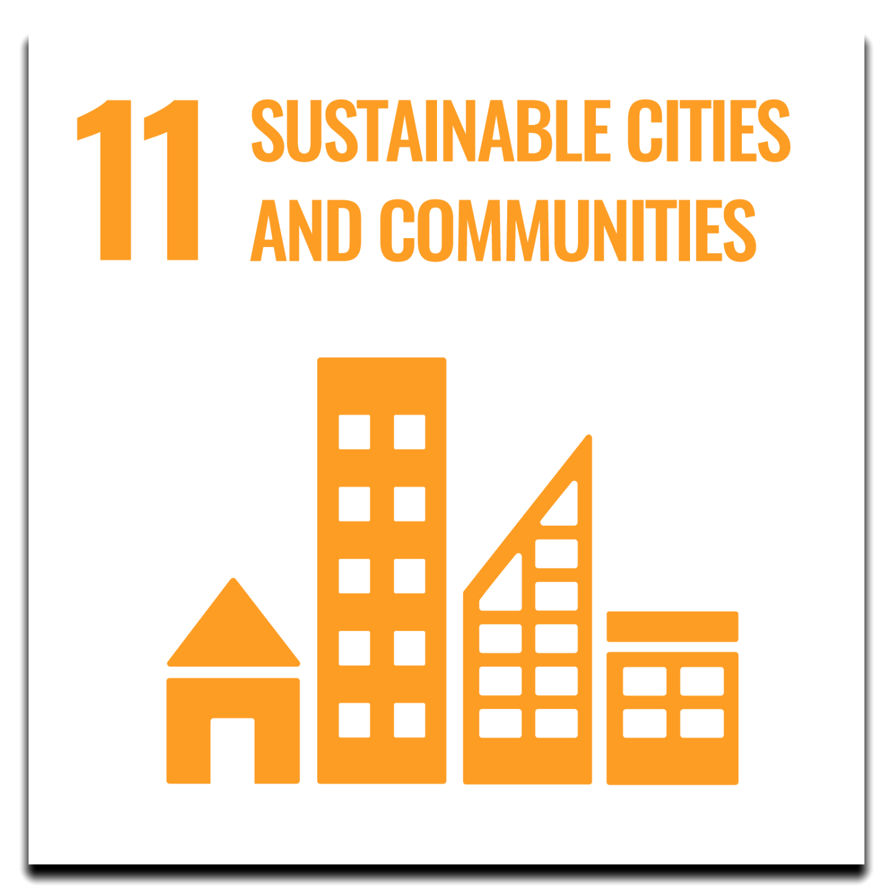

Ensuring healthy lives and promoting well-being at all ages is essential to sustainable development. Currently, the world is facing a global health crisis unlike any other — COVID-19 is spreading human suffering, destabilizing the global economy and upending the lives of billions of people around the globe.
Before the pandemic, major progress was made in improving the health of millions of people. Significant strides were made in increasing life expectancy and reducing some of the common killers associated with child and maternal mortality.
But more efforts are needed to fully eradicate a wide range of diseases and address many different persistent and emerging health issues. By focusing on providing more efficient funding of health systems, improved sanitation and hygiene, and increased access to physicians, significant progress can be made in helping to save the lives of millions.
Health emergencies such as COVID-19 pose a global risk and have shown the critical need for preparedness. The United Nations Development Programme highlighted huge disparities in countries’ abilities to cope with and recover from the COVID-19 crisis. The pandemic provides a watershed moment for health emergency preparedness and for investment in critical 21st century public services.
TARGETS
3.1 By 2030, reduce the global maternal mortality ratio to less than 70 per 100,000 live births.
3.2 By 2030, end preventable deaths of newborns and children under 5 years of age, with all countries aiming to reduce neonatal mortality to at least as low as 12 per 1,000 live births and under-5 mortality to at least as low as 25 per 1,000 live births.
3.3 By 2030, end the epidemics of AIDS, tuberculosis, malaria and neglected tropical diseases and combat hepatitis, water-borne diseases and other communicable diseases.
3.4 By 2030, reduce by one third premature mortality from non-communicable diseases through prevention and treatment and promote mental health and well-being.
3.5 Strengthen the prevention and treatment of substance abuse, including narcotic drug abuse and harmful use of alcohol.
3.6 By 2020, halve the number of global deaths and injuries from road traffic accidents.
3.7 By 2030, ensure universal access to sexual and reproductive health-care services, including for family planning, information and education, and the integration of reproductive health into national strategies and programmes.
3.8 Achieve universal health coverage, including financial risk protection, access to quality essential health-care services and access to safe, effective, quality and affordable essential medicines and vaccines for all.
3.9 By 2030, substantially reduce the number of deaths and illnesses from hazardous chemicals and air, water and soil pollution and contamination.
3.A Strengthen the implementation of the World Health Organization Framework Convention on Tobacco Control in all countries, as appropriate.
3.B Support the research and development of vaccines and medicines for the communicable and noncommunicable diseases that primarily affect developing countries, provide access to affordable essential medicines and vaccines, in accordance with the Doha Declaration on the TRIPS Agreement and Public Health, which affirms the right of developing countries to use to the full the provisions in the Agreement on Trade Related Aspects of Intellectual Property Rights regarding flexibilities to protect public health, and, in particular, provide access to medicines for all.
3.C Substantially increase health financing and the recruitment, development, training and retention of the health workforce in developing countries, especially in least developed countries and small island developing States.
3.D Strengthen the capacity of all countries, in particular developing countries, for early warning, risk reduction and management of national and global health risks.
.png)